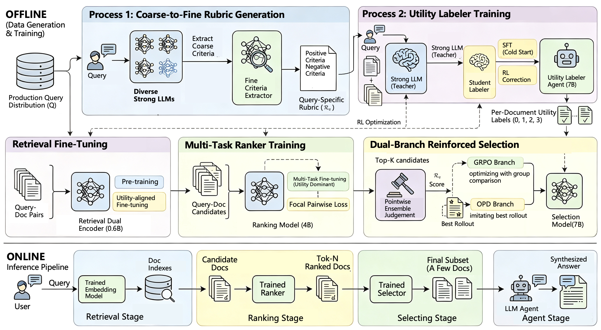
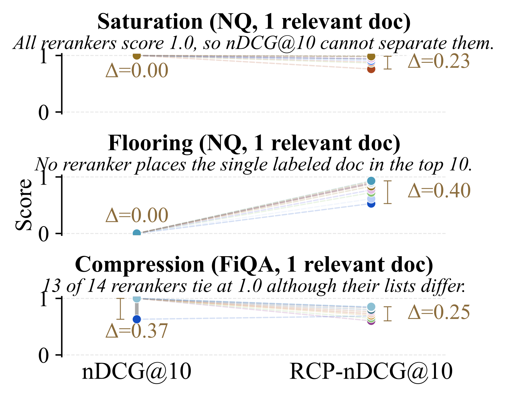

Contents · 5 sections
1A list that is ranked well is not always the set an answer needs2How one query rubric can supervise both retrieval and ranking3How a set score is passed back when 3 to 8 documents are chosen4Why the online gains do not add up to the sum of the parts5How far the offline numbers can check the same storySHARE
Search results now feed an LLM that writes the answer, while the upstream stages are still trained as if a person were scanning a list: Yuanbao aligns the stack with a rubric
Traditional search ranks documents for human browsing using relevance, authority, freshness, and diversity. In agentic search, people no longer scroll item by item. An LLM writes a single answer from a small set of documents. The answer can only be as good as that set: whether it covers the need, misses a key condition, or contains conflicts.
A common approach still trains retrieval and ranking for per-document relevance, and only then uses reinforcement learning to pick a subset. The upstream stages are not trained on whether the set is useful for writing the answer, so even a strong selector can only choose among candidates that are already skewed.
Researchers from Tencent’s Yuanbao Search and Wuhan University train the whole pipeline against one query-level rubric. The rubric lists weighted positive criteria the set should meet and negative criteria it should avoid, then yields two training signals: per-document utility labels for retrieval and ranking, and a set-level score for the selector. The authors are Yu Lu, Lixin Zou, Yangqi Chen, Hui Xu, Qiaolin Xia, Hao Wang, Qianwen Ma, Reed Li, Shuang Zeng, Haijin Liang, and Haibo Shi. Lixin Zou is at the School of Cyber Science and Engineering, Wuhan University, and most of the other authors use Tencent email addresses. The official HTML extract does not give every author’s affiliation in full, so those missing units are not filled in here.
A list that is ranked well is not always the set an answer needs
Traditional search tries to make each rank useful as a person reads down the list. Agentic search changes how results are consumed: the model sees only a bounded set, then writes a summary or answers a question that no single document covers. If one facet is missing, or conflicting material is mixed in, later generation cannot recover it.
Prior work often follows two separate tracks: improving individual stages, or adding reinforcement-learning selection on top of upstream modules already trained for relevance. The authors argue that this leaves the full stack unaligned with utility for writing an answer.

Their approach is to build a rubric for each query: the information need is broken into checkable criteria that define what a dependable evidence set looks like. Positive criteria should be met, negative criteria should be avoided, and both carry weights. The same rubric can score a whole set and also be turned into per-document labels, so retrieval and ranking can learn in the same direction earlier.
How one query rubric can supervise both retrieval and ranking
Offline, the system first generates a rubric from coarse to fine. Retrieval and ranking still need a score for each document, so they can index the corpus and return about a thousand candidates. That requires per-document labels at a much larger scale than set-level judging alone.
A labeler maps the query, the document, and the rubric to a utility grade from 0 to 3. Grade 3 means all high-weight positive criteria are covered and no negative criterion is triggered; grade 2 means most high-weight criteria are covered, with minor gaps; grade 1 covers only low-weight criteria; grade 0 triggers a negative criterion or covers no positive one. The paper’s example is the query “2026 iPad Pro performance and price”: a document with M5 benchmarks, battery life, and official pricing is labeled 3, and a document that only names the chip is labeled 1.
Labeling every pair in the corpus with a strong model is not feasible at this scale. A strong model is used as an offline teacher on a small subset, and those judgments are distilled into a lightweight student labeler. The student is first supervised-fine-tuned on the teacher labels, then refined with reinforcement learning to align more directly with the rubric. PNR is the number of correctly ordered pairs, among document pairs whose labels differ, divided by the number of incorrectly ordered pairs; the paper states that a value above 1 indicates correct pairwise ordering, and that higher is better. The backbone is Qwen3-4B. On an internal benchmark, the PNR is 4.50 after supervised fine-tuning, 4.67 after data optimization with hard cases and chain-of-thought, and 4.82 after reinforcement learning; this last checkpoint is deployed as the production labeler that supervises retrieval and ranking.
Retrieval uses the 0.6B Qwen3-Embedding dual encoder. It is first contrastively pre-trained on 610 million in-domain query-document pairs, then fine-tuned for utility by replacing query-log positives with labeler-verified positives of grade 2 or higher. Ranking uses a 4B Qwen3 model with four scoring heads—utility, authority, freshness, and quality—that share one encoder. The utility head is supervised by the labeler’s rubric labels, and the other three heads use existing production signals; at inference only the utility head produces the ranking score. The auxiliary losses are scaled by 0.5, and the other three tasks act as moderate regularizers.
How a set score is passed back when 3 to 8 documents are chosen
After ranking, about 20 documents remain, and the selector picks a final subset of 3 to 8 for the LLM to write from. Unlike the earlier stages, this step optimizes the subset as a whole for rubric coverage. The policy is Qwen3-7B-Instruct. The paper writes each rollout as a subset of 3 to 8 documents, and the policy at each step is conditioned on the query, the ranked candidates, and the prefix already generated. The paper does not say how an output token is encoded and converted into a document subset in Dual-Branch Reinforced Selection, or at which step the diversity constraint is applied. At serving time the trained policy does not take a rubric as an online input. The rubric is used in training: the reward comes from a pointwise-ensemble judge (PE Judge), in which DeepSeek-V4-Flash scores the whole subset against the rubric by summing weighted satisfaction of the positive criteria and subtracting deductions for triggered negative criteria.
The difficulty is that the reward is a single scalar for the set, with no token-level signal. The authors split credit with dual-branch training: eight rollouts are sampled per query, scored by the judge, and normalized within the group. Rollouts above the group mean enter a GRPO branch that reinforces those patterns at the token level. Rollouts at or below the mean are not updated with a negative advantage. The best in-group rollout is used as a teacher through OPD (best-rollout distillation), with a weight that grows with the reward gap, so the policy is pulled toward that rollout. Hoot says

Score above the group mean
- This rollout
- enters the GRPO branch
- What is updated
- reinforce this selection at token level
- The signal
- a group-relative advantage from one set score
It does not mark each of the 3 to 8 documents right or wrong.
Score at or below the group mean
- This rollout
- no negative-advantage update
- What it learns
- the best in-group rollout
- How strongly
- weighted by the gap to the best score
The paper says a negative advantage would suppress every token choice indiscriminately.
The two columns are two updates on the same query's eight rollouts, not two unrelated pipelines. Figure 2 draws the dual branch but does not place the split rule side by side.
Source
Paper §2.5: G=8 rollouts per query; the reward is one scalar for the subset; r>μ enters GRPO; r≤μ is not given a negative advantage and is distilled toward the best in-group rollout, with weight equal to the reward gap.
Why the online gains do not add up to the sum of the parts
The online comparison ran on 5% of Yuanbao Search production traffic for 14 days, covering about 2.8 million queries. From that traffic, 1,000 queries were sampled for a blind side-by-side human evaluation of answers: annotators compared treatment and baseline responses without knowing which system wrote which. The metric is Good-Same-Bad (GSB): good minus bad, divided by the total of good, same, and bad.
The table below places the lift from adding each component to the production baseline next to the net lift when all three run together. The numbers come from Table 2 of the paper.
| Configuration | Answer-quality GSB lift (%) |
|---|---|
| Production baseline | — |
| Rubric-aligned retrieval only | +0.40 |
| Rubric-aligned ranking only | +3.94 |
| Rubric-aligned selection only | +4.82 |
| Sum of the separate lifts | +9.16 |
| All three components together | +8.52 |
(Numbers from paper Table 2.)
Each component raises GSB against the production baseline, with selection the largest at +4.82%, ranking at +3.94%, and retrieval at +0.40%; the paper marks all three as significant by a paired t-test against that baseline, with p below 0.05.
The separate lifts sum to 9.16%, which is 0.64 points above the joint net gain of 8.52%, so the three numbers should not be added; 8.52% is the joint answer-quality GSB lift of the full pipeline. The authors attribute the gap to overlap, because the three components are trained toward the same rubric objective. Retrieval’s lift is the smallest; the paper notes that its inference cost is low and that it passes better candidates to every later stage.
How far the offline numbers can check the same story
The rubric itself is checked against human judgments. On 2,000 held-out pairwise set-ranking samples, the reward model’s agreement with people is 79.3% with the full rubric and 68.7% when it scores utility directly without a rubric. Removing negative criteria, fine sub-criteria, multi-model generation, or criterion weights all lowers agreement, and dropping negative criteria hurts most. Of the remaining 21%, the authors assign 7% to genuine misses, 4% to unclear intent, and 10% to partial satisfaction, so 79.3% is not presented as a sealed ceiling; misses and unclear cases remain on the books.
On Recall@1K across four internal benchmarks, in-domain pre-training raises the open-source zero-shot checkpoint by 5.1 to 8.6 points, and utility-aligned fine-tuning adds another 5.6 to 6.1 points, for a combined 11.2 to 14.2 points. The combined gains are largest on Entity and Long-Tail, at 14.2 and 12.8 points, and each step is significant against the previous one. INT4 quantization drops recall by at most 0.87 points, which is not significant. On a 400,000-example human ranking benchmark, PNR is 3.807 for the baseline, 3.893 with multi-task training alone, 3.939 with focal loss alone, and 3.959 with both. The authors report only PNR offline because answer-level evaluation is costly, and they also note that PNR does not convert into the online GSB lift; the two move in the same direction empirically, so PNR is an offline indicator rather than a second writing of the same number.
In the selector comparison, the production baseline scores 9.45 on utility, supervised fine-tuning reaches 9.70, GRPO alone is 9.68 and stays below that fine-tune, and GRPO plus best-rollout distillation reaches 9.73, a 3.0% lift over the baseline. Authority, freshness, and quality barely move. The authors read this as a rubric-conditioning effect: the baseline scores documents pointwise for relevance and authority, then applies submodular diversity reranking, so its objective does not reward covering the query’s rubric, whereas the teacher labels, fine-tuning targets, and set-level reward are all defined on the rubric. The gain is modest but consistent.
Both the online and offline numbers sit inside this production system: the traffic is from Yuanbao Search, the blind evaluation covers only the 1,000 sampled queries, and the offline retrieval and ranking sets are internal. Agreement between the rubric and people is below 80%, and the labeler is a distilled, reinforcement-learned student, not a fully human gold standard. The same figures should not be assumed to hold on another product or under another evaluation protocol.
How did this read for you?
Hoot made a note. Thanks for the feedback.
One tap, no sign-in; tap again to undo. Only anonymous counts are kept, never who you are.
Related papersMore from Paper Daily
 Retrieval · 2026-11-13Beyond Query-Item Matching: Personalized Behavioral Relevance Modeling for E-commerce Search via Rubric-Guided Reinforcement LearningE-commerce search usually has a relevance model sort candidates into tiers by text match between query and item, then hands them to a CTR model, so an item the user clearly prefers can get little exposure just because it landed in a low tier. This work from Alibaba's 1688 moves part of personalization into the relevance step: an LLM reads the user's same-day, recent and long-term search and purch…
Retrieval · 2026-11-13Beyond Query-Item Matching: Personalized Behavioral Relevance Modeling for E-commerce Search via Rubric-Guided Reinforcement LearningE-commerce search usually has a relevance model sort candidates into tiers by text match between query and item, then hands them to a CTR model, so an item the user clearly prefers can get little exposure just because it landed in a low tier. This work from Alibaba's 1688 moves part of personalization into the relevance step: an LLM reads the user's same-day, recent and long-term search and purch… Retrieval · 2026-11-11Yuanbao-Reranker: Document-Grounded Synthesis and Preference Distillation for Text RerankingRerankers fine-tuned pointwise on relevant and not-relevant labels have a gap: every negative for a query carries the same label, so the model never learns which negatives sit closer to the positive. Tencent's Yuanbao Search pairs each positive with three negatives of different difficulty and adds a distillation loss: the teacher's score gap between two documents acts as a lower bound, and the st…
Retrieval · 2026-11-11Yuanbao-Reranker: Document-Grounded Synthesis and Preference Distillation for Text RerankingRerankers fine-tuned pointwise on relevant and not-relevant labels have a gap: every negative for a query carries the same label, so the model never learns which negatives sit closer to the positive. Tencent's Yuanbao Search pairs each positive with three negatives of different difficulty and adds a distillation loss: the teacher's score gap between two documents acts as a lower bound, and the st… Generative · 2026-07-31UniVA: Unified Value Alignment for Generative Recommendation in Industrial AdvertisingDeep dive: UniVA: Unified Value Alignment for Generative Recommendation in Industrial Advertising.
Generative · 2026-07-31UniVA: Unified Value Alignment for Generative Recommendation in Industrial AdvertisingDeep dive: UniVA: Unified Value Alignment for Generative Recommendation in Industrial Advertising. Retrieval · 2026-08-05From Relevance to Authority: Authority-aware Generative Retrieval in Web Search EnginesDeep dive: From Relevance to Authority: Authority-aware Generative Retrieval in Web Search Engines.
Retrieval · 2026-08-05From Relevance to Authority: Authority-aware Generative Retrieval in Web Search EnginesDeep dive: From Relevance to Authority: Authority-aware Generative Retrieval in Web Search Engines. Retrieval · 2026-11-04WeSearch: A Unified Model-Centric Retrieval Framework for WeChat SearchWeSearch at WeChat Search replaces the old set of parallel retrieval paths with one model: it first finds the document clusters relevant to the query, then scores individual documents inside those clusters, separating coarse pruning from fine relevance judgment. Unlike generative retrieval, it does not give each document one fixed hierarchical Semantic ID; that approach assumes a document follows…
Retrieval · 2026-11-04WeSearch: A Unified Model-Centric Retrieval Framework for WeChat SearchWeSearch at WeChat Search replaces the old set of parallel retrieval paths with one model: it first finds the document clusters relevant to the query, then scores individual documents inside those clusters, separating coarse pruning from fine relevance judgment. Unlike generative retrieval, it does not give each document one fixed hierarchical Semantic ID; that approach assumes a document follows… Retrieval · 2026-10-25Learning Marginal Viewpoint Utility for Budgeted Evidence Selection in RAGAsk a question about election participation, and a complete answer should cover three kinds of people: those who voted, those who did not, and those who were not eligible. If the context holds only voters' answers, it represents only one viewpoint, however accurate and relevant each one is. LMVU is a linear ranker with only 18 coefficients. At each step it computes novelty and similar features fr…
Retrieval · 2026-10-25Learning Marginal Viewpoint Utility for Budgeted Evidence Selection in RAGAsk a question about election participation, and a complete answer should cover three kinds of people: those who voted, those who did not, and those who were not eligible. If the context holds only voters' answers, it represents only one viewpoint, however accurate and relevant each one is. LMVU is a linear ranker with only 18 coefficients. At each step it computes novelty and similar features fr…
Retrieval · 2026-10-25Rubric-Calibrated Preferences: Cross-Query Calibration of LLM Judgments via Item Response TheoryAcross the rerankers the authors evaluated, nDCG cannot tell them apart on 45.6% of NanoBEIR queries. The root cause is that human relevance labels are sparse, noisy and limited to a few discrete grades. RCP first has an LLM score 10 documents at a time and puts each document into several batches. The more one document outscores another in a batch, the likelier it is more relevant, and a Bradley-…
Discussion
Add experiment details, reproduction notes or a different take. Requires a GitHub sign-in.
Loading the discussion…